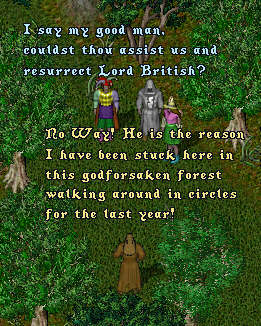
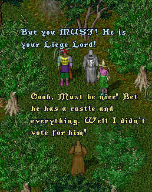
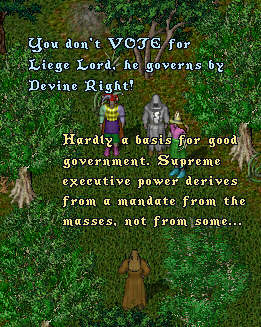
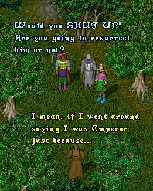
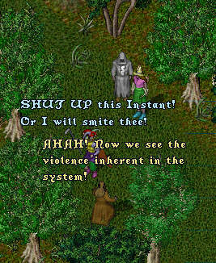
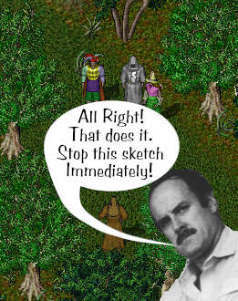

Episode 69: The Conspiracy (Part 2) - Having escaped the hideout, ImaNewbie, Irma and LB's Ghost begin their quest to find the mysterious crystals that hold the GMs and Cousellors under the spell of Lord Blackthorne, forcing them to do his evil bidding. But first they must resurrect Lord British. As the scene opens they encounter a Wandering Healer in the forest and ask for his assistance.






Due to an uncanny (but purely unintentional) similarity between this episode and a certain scene from "Monty Python's Quest for the Holy Grail", Tryon regrets that he is unable to continue with this episode. Tune in next week though, as our three intrepid adventures set out save Britannia's citizenry from a fate worse than death.